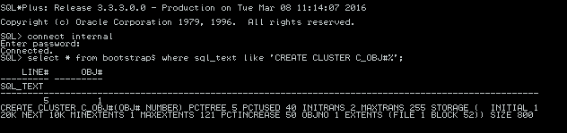

|
|
This was first published on https://blog.dbi-services.com/learning-and-troubleshooting-follow-the-path (2016-05-28)
Republishing here for new followers. The content is related to the the versions available at the publication date
You query a simple table to get its rows. Did you ever ask yourself how oracle knows which blocks to read from disk? Let’s question everything and follow the path to dictionary, bootstrapping, spfile,… up to GPnP profile. If you want to read the rows that are stored in a table, you have to read from the segment extents.
How do you find those extents? You need to get the extent list from the tablespace header, and some information from the segment header
Where is the segment header? This is recorded in the dictionary. For a table it is in SYS.TAB$
Here is the definition that you can see in ?/rdbms/admin/dcore.bsq which is run at CREATE DATABASE time
create table tab$ /* table table */ ( obj# number not null, /* object number */ dataobj# number, /* data layer object number */ ts# number not null, /* tablespace number */ file# number not null, /* segment header file number */ block# number not null, /* segment header block number */
TAB$ has all table definition and the TS#, FILE# and BLOCK# identifies uniquely the block where the segment header is. TS# identifies the tablespace. FILE# identifies the datafile within the tablespace. And BLOCK# is the offset within that file (there is only one block size for a tablespace). This is the physical identifier of a segment.
Let’s take SCOTT.EMP as an example
SQL> select object_id,object_type,data_object_id from dba_objects where owner='SCOTT' and object_name='EMP';
OBJECT_ID OBJECT_TYPE DATA_OBJECT_ID
---------- ----------------------- --------------
121515 TABLE 121533
I get segment header from TAB$
SQL> select ts#,file#,block# from sys.tab$ where obj#=121515;
TS# FILE# BLOCK#
---------- ---------- ----------
4 6 458
The extents listed in the tablespace header can be displayed from X$KTFBUE fixed table (if it were a Dictionary Managed Tablespace this information would be in the dictionary table UET$)
SQL> select ktfbuefno,ktfbuebno,ktfbueblks from x$ktfbue where ktfbuesegtsn=4 and ktfbuesegfno=6 and ktfbuesegbno=458;
KTFBUEFNO KTFBUEBNO KTFBUEBLKS
---------- ---------- ----------
6 456 8
From there we know that SCOTT.EMP data is stored in 8 blocks starting from block number 456 in file 6. This file number is relative to the tablespace, which is the tablespace number 4 because all segment extents are in the same tablespace as the segment header.
Ok, so you can get everything from the dictionary, starting from TAB$. But it’s a table. So if you want to read it you need to read blocks from it’s extents. Where are those extents?
Easy, TAB$ itself has information in TAB$
SQL> select obj# from obj$ where name='TAB$';
OBJ#
----------
4
SQL> select ts#,file#,block# from sys.tab$ where obj#=4;
TS# FILE# BLOCK#
---------- ---------- ----------
0 1 144
Information is there: segment header is in tablespace 0 (which is SYSTEM) file 1 and block 144. And we can get extents from x$ktfbue where ktfbuesegtsn=0 and ktfbuesegfno=1 and ktfbuesegbno=144
But wait a minute… Am I saying that in order to get TAB$ data you need first to get TAB$ data? This is not possible. It’s a Catch 22 here. TAB$ metadata about itself must be available before being able to read the table. This core dictionary table information must be hardcoded and this is done by special bootstrapping code. The dcore.bsq above is not a normal SQL script, but a Bootstrap SQL which has a special syntax. When those core dictionary objects are created, by CREATE DATABASE, their extents go into an hardcoded location in the SYSTEM datafile.
And when an instance opens a database, the metadata about them is hardcoded in order to have the minimal information to be able to find the other dictionary information. This is done by pre-filling the dictionary cache with some bootstrap code. And this code is visible:
SQL> select * from bootstrap$ where sql_text like 'CREATE TABLE TAB$%';
LINE# OBJ# SQL_TEXT
---------- ---------- ---------------------------------------------------------------------------------------------------------------------------------
4 4 CREATE TABLE TAB$("OBJ#" NUMBER NOT NULL,"DATAOBJ#" NUMBER,"TS#" NUMBER NOT NULL,"FILE#" NUMBER NOT NULL,"BLOCK#" NUMBER NOT NULL
,"BOBJ#" NUMBER,"TAB#" NUMBER,"COLS" NUMBER NOT NULL,"CLUCOLS" NUMBER,"PCTFREE$" NUMBER NOT NULL,"PCTUSED$" NUMBER NOT NULL,"INIT
RANS" NUMBER NOT NULL,"MAXTRANS" NUMBER NOT NULL,"FLAGS" NUMBER NOT NULL,"AUDIT$" VARCHAR2(38) NOT NULL,"ROWCNT" NUMBER,"BLKCNT"
NUMBER,"EMPCNT" NUMBER,"AVGSPC" NUMBER,"CHNCNT" NUMBER,"AVGRLN" NUMBER,"AVGSPC_FLB" NUMBER,"FLBCNT" NUMBER,"ANALYZETIME" DATE,"SA
MPLESIZE" NUMBER,"DEGREE" NUMBER,"INSTANCES" NUMBER,"INTCOLS" NUMBER NOT NULL,"KERNELCOLS" NUMBER NOT NULL,"PROPERTY" NUMBER NOT
NULL,"TRIGFLAG" NUMBER,"SPARE1" NUMBER,"SPARE2" NUMBER,"SPARE3" NUMBER,"SPARE4" VARCHAR2(1000),"SPARE5" VARCHAR2(1000),"SPARE6" D
ATE) STORAGE ( OBJNO 4 TABNO 1) CLUSTER C_OBJ#(OBJ#)
The code to create TAB$ is there with additional bootstrapping SQL syntax to hardcoded the OBJECT_ID. This table is actually stored in a CLUSTER segment, and its definition is also harcoded in bootstrapping code:
SQL> select * from bootstrap$ where sql_text like 'CREATE CLUSTER C_OBJ#%';
LINE# OBJ# SQL_TEXT
---------- ---------- --------------------------------------------------------------------------------
2 2 CREATE CLUSTER C_OBJ#("OBJ#" NUMBER) PCTFREE 5 PCTUSED 40 INITRANS 2 MAXTRANS 25
5 STORAGE ( INITIAL 136K NEXT 200K MINEXTENTS 1 MAXEXTENTS 2147483645 PCTINCREA
SE 0 OBJNO 2 EXTENTS (FILE 1 BLOCK 144)) SIZE 800
File 1 Block 144 this is exactly what we have seen when querying TAB$ but actually it’s an hardcoded value. You will find exactly the same in all Oracle Database since 8.0
It seems that it was a different value in Oracle 7:  I don’t remember that upgrade to 8.0 had to update the first blocks of SYSTEM datafiles, but it was probably the case. If anyone has a database that has been upgraded since Oracle 7 then please tell me, but that should be rare nowadays. But for sure the code that warms up the dictionary cache must be consistent with how those segments are stored in the SYSTEM tablespace.
Let’s continue. We know how to read data as soon as the database is opened because all required information is in the SYSTEM datafile.
But how do we know where is this datafile? The controlfile knows the location of all datafiles and this information is available since the database mount stage
Here is an example after alter database backup controlfile to trace;
CREATE CONTROLFILE REUSE DATABASE "RACDB" NORESETLOGS NOARCHIVELOG
MAXLOGFILES 192
MAXLOGMEMBERS 3
MAXDATAFILES 1024
MAXINSTANCES 32
MAXLOGHISTORY 292
LOGFILE
GROUP 1 '+DATA/RACDB/ONLINELOG/group_1.262.906247575' SIZE 50M BLOCKSIZE 512,
GROUP 2 '+DATA/RACDB/ONLINELOG/group_2.263.906247575' SIZE 50M BLOCKSIZE 512,
GROUP 3 '+DATA/RACDB/ONLINELOG/group_3.264.906247575' SIZE 50M BLOCKSIZE 512,
GROUP 4 '+DATA/RACDB/ONLINELOG/group_4.274.906299789' SIZE 50M BLOCKSIZE 512,
GROUP 5 '+DATA/RACDB/ONLINELOG/group_5.275.906299789' SIZE 50M BLOCKSIZE 512,
GROUP 6 '+DATA/RACDB/ONLINELOG/group_6.276.906299789' SIZE 50M BLOCKSIZE 512
-- STANDBY LOGFILE
DATAFILE
'+DATA/RACDB/DATAFILE/system.258.906247493',
'+DATA/RACDB/DATAFILE/sysaux.257.906247463',
'+DATA/RACDB/DATAFILE/undotbs1.260.906247529',
Now the question is: Where is the controlfile? This information is known from the instance parameter:
SQL> show parameter control_files NAME TYPE VALUE ------------------------------------ ----------- --------------------------------------------- control_files string +DATA/RACDB/CONTROLFILE/current.261.906247573
Oh good. I’m in ASM so I can continue my path, with question such as: how do we find the controlfile?
But before that, where this instance parameter comes from? SPFILE is read at instance startup.
Where is the SPFILE?
SQL> show parameter spfile NAME TYPE VALUE ------------------------------------ ----------- ---------------------------------------------- spfile string +DATA/RACDB/PARAMETERFILE/spfile.269.906247759
In single instance, the SPFILE is found in $ORACLE_HOME/dbs but here I’m in RAC and the database resource has this information:
[oracle@racp1vm1 ~]$ srvctl config database -db RACDB Database unique name: RACDB Database name: RACDB Oracle home: /u01/app/oracle/product/12.1.0/dbhome_1 Oracle user: oracle Spfile: +DATA/RACDB/PARAMETERFILE/spfile.269.906247759
So in order to find the datafiles or the SPFILE you must have access to the +DATA diskgroup. The information about it is available from the ASM instance and this is easy to find because you have only one asm instance on the server.
But now, let’s go to the ASM instance. It stores all metadata in the disks that are accessible once the instance has started. What does it need to start and to find those disks? The ASM instance has a SPFILE and information from the SPFILE is mandatory to access the diskgroups. So where is the SPFILE of the ASM instance?
[grid@racp1vm1 ~]$ asmcmd spget +CRS_DG/ws-dbi-scan1/ASMPARAMETERFILE/registry.253.905527691
Okay… another Catch 22 here. the ASM SPFILE is stored in ASM and you need an ASM instance to access to it… but starting an ASM instance needs SPFILE information…
I’ll not go into details which are very well explained by Anju Garg in her blog post http://oracleinaction.com/asm-spfile-on-asm/ and Robert Bialek one referenced at the end of it.
[grid@racp1vm1 ~]$ gpnptool get -o- | xmllint --format - | grep SPFile Success. <orcl:ASM-Profile id="asm" DiscoveryString="/dev/mapper/*" SPFile="+CRS_DG/ws-dbi-scan1/ASMPARAMETERFILE/registry.253.905527691" Mode="remote"/>
Everything is there. The GPnP profile has the ASM discovery string that lists the system disks. They are scanned at cluster start and all bootstrap information is found in the bootstrap header.
When you change the asm_diskstring from the ASM instance, or when you change the SPFILE location from asmcmd, the GPnP profile is updated. And if it is corrupted, the cluster doesn’t start.
I used ‘gnpnptool get’ but that doesn’t tell us where is the GPnP profile stored.
[grid@racp1vm1 ~]$ ls $ORACLE_HOME/gpnp/$HOSTNAME/profiles/peer/profile.xml /u01/app/12.1.0/grid/gpnp/racp1vm1/profiles/peer/profile.xmlHere is the content, but you need gpnptool to change it because it is signed.
[grid@racp1vm1 ~]$ cat $ORACLE_HOME/gpnp/$HOSTNAME/profiles/peer/profile.xml <?xml version="1.0" encoding="UTF-8"?><gpnp:GPnP-Profile Version="1.0" xmlns="http://www.grid-pnp.org/2005/11/gpnp-profile" xmlns:gpnp="http://www.grid-pnp.org/2005/11/gpnp-profile" xmlns:orcl="http://www.oracle.com/gpnp/2005/11/gpnp-profile" xmlns:xsi="http://www.w3.org/2001/XMLSchema-instance" xsi:schemaLocation="http://www.grid-pnp.org/2005/11/gpnp-profile gpnp-profile.xsd" ProfileSequence="9" ClusterUId="3db40dc75a3aef58bf2f0b71e011b137" ClusterName="ws-dbi-scan1" PALocation=""><gpnp:Network-Profile><gpnp:HostNetwork id="gen" HostName="*"><gpnp:Network id="net1" IP="192.168.22.0" Adapter="bond0" Use="public"/><gpnp:Network id="net2" IP="10.1.1.0" Adapter="enp0s10" Use="cluster_interconnect,asm"/></gpnp:HostNetwork></gpnp:Network-Profile><orcl:CSS-Profile id="css" DiscoveryString="+asm" LeaseDuration="400"/><orcl:ASM-Profile id="asm" DiscoveryString="" SPFile="+CRS_DG/ws-dbi-scan1/ASMPARAMETERFILE/registry.253.905527691" Mode="remote"/><ds:Signature xmlns:ds="http://www.w3.org/2000/09/xmldsig#"><ds:SignedInfo><ds:CanonicalizationMethod Algorithm="http://www.w3.org/2001/10/xml-exc-c14n#"/><ds:SignatureMethod Algorithm="http://www.w3.org/2000/09/xmldsig#rsa-sha1"/><ds:Reference URI=""><ds:Transforms><ds:Transform Algorithm="http://www.w3.org/2000/09/xmldsig#enveloped-signature"/><ds:Transform Algorithm="http://www.w3.org/2001/10/xml-exc-c14n#"> <InclusiveNamespaces xmlns="http://www.w3.org/2001/10/xml-exc-c14n#" PrefixList="gpnp orcl xsi"/></ds:Transform></ds:Transforms><ds:DigestMethod Algorithm="http://www.w3.org/2000/09/xmldsig#sha1"/><ds:DigestValue>3MkzWCCTRYJ1FDJ4h8G6PHrgfQQ=</ds:DigestValue></ds:Reference></ds:SignedInfo><ds:SignatureValue>XQtNrjbazMkfCO1e52scpC8y3tdpVbyFxWPPXirbZOmZ+ajcnAOD85qMJUPBaXG8G2sLCWVX5ir+Reo5f0ewyHCtzpGud9IWoYhb01T2W0o4WYzFFcwncxHDWDBCdLiKdSBOEJytRMCufgfciA/v6nzxWzDRS/7svWzG7shVzpI=</ds:SignatureValue></ds:Signature></gpnp:GPnP-Profile>
I used $ORACLE_HOME which is the Grid infrastructure home. If you’re not sure where it is, look at the +ASM entry in /etc/oratab:
[grid@racp1vm1 ~]$ grep +ASM /etc/oratab +ASM1:/u01/app/12.1.0/grid:N # line added by Agent
So, with $HOSTNAME and /etc/oratab you can follow the path and understand how oracle can get any information from the system: configuration, metadata, data. Of course you can continue your questions at the system level: how the disks are opened and find your way with devices, multipathing,…
Even when a system is complex (and Grid Infrastructure / RAC is complex) you can follow the path and understand where information comes from. There’s no magic. There’s no black box. Everything can be understood. It may take time reading documentation, reading logs, testing, tracing,… But this is how you can understand exactly how it works and thus be prepared to troubleshoot any issue. As an example, in a lab (such as the racattack one) you can try to mess-up some ASM SPFILE parameters, for example change asm_diskstring to some random characters, and try to restart the cluster. If you don’t know how it works, you may spend a long time before fixing the issue, and the risk is that you break it even more. If you have read and understood the above then you will know exactly what has to be fixed: if the GPnP profile can’t find the disks then nothing can go further.
{kind=link}